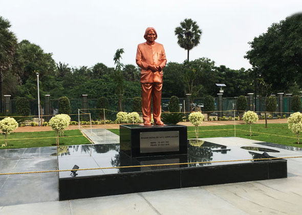

Dr. APJ Abdul Kalam, known as the "Missile Man of India," was an inspiring individual who made immense contributions to science and technology. He served as the 11th President of India and left a significant impact on the nation and the world through his work and vision.
Early Life
Avul Pakir Jainulabdeen Abdul Kalam was born on 15 October 1931 in Rameswaram, Tamil Nadu. Coming from a modest background, he faced many hardships growing up. Despite these challenges, his determination and hard work led him to excel in academics, particularly in science and mathematics.
Education
Dr. Kalam completed his schooling at Schwartz Higher Secondary School and went on to graduate in Physics from St. Joseph's College, Tiruchirappalli. He then studied Aerospace Engineering at the Madras Institute of Technology (MIT).
His time at MIT was pivotal, where he developed an interest in aeronautics and space. This led him to pursue a career in aerospace and defense research.
Career
Dr. Kalam began his career at the Defence Research and Development Organisation (DRDO) and later joined the Indian Space Research Organisation (ISRO). He was a key figure in India's civilian space program and military missile development efforts, earning him the nickname "Missile Man of India".
- SLV-III: He was the project director for the development of India's first Satellite Launch Vehicle (SLV-III), which successfully deployed the Rohini satellite in near-earth orbit in July 1980.
- Agni and Prithvi: Dr. Kalam played a pivotal role in the development and operationalization of Agni and Prithvi missiles, significantly strengthening India's defense capabilities.
Presidency
In 2002, Dr. Kalam became the 11th President of India. His presidency was marked by his vision for transforming India into a developed nation by 2020. He was a beloved president, known for his humility, wisdom, and ability to connect with people from all walks of life, especially the youth.
Achievements
- Recipient of India's highest civilian honors - the Padma Bhushan (1981), Padma Vibhushan (1990), and Bharat Ratna (1997).
- Author of several influential books including "Wings of Fire", "Ignited Minds", and "India 2020".
- Developed the concept of PURA (Providing Urban Amenities to Rural Areas), aimed at achieving rural development through the establishment of urban infrastructure in rural areas.
- Established the "Kalam-Raju Stent" in collaboration with cardiologist Soma Raju, making healthcare more affordable for many.

Legacy
Dr. Kalam's legacy continues to inspire millions. His life story is a testament to the power of dreams, hard work, and perseverance. He remains a symbol of hope, resilience, and aspiration for many young Indians who look up to him as a role model.
Inspirational Quotes
"Dream, dream, dream. Dreams transform into thoughts and thoughts result in action."
"You have to dream before your dreams can come true."
"If you want to shine like a sun, first burn like a sun."
"Excellence is a continuous process and not an accident."